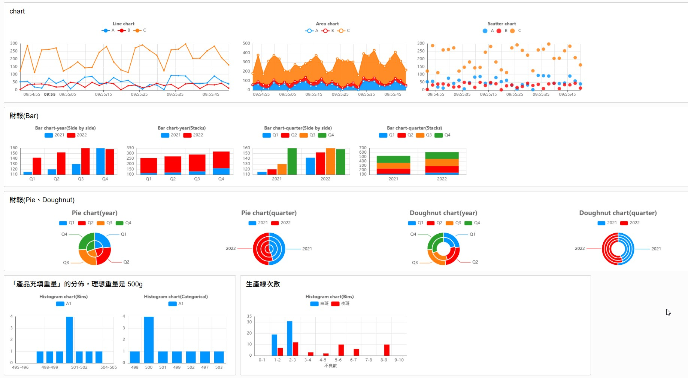
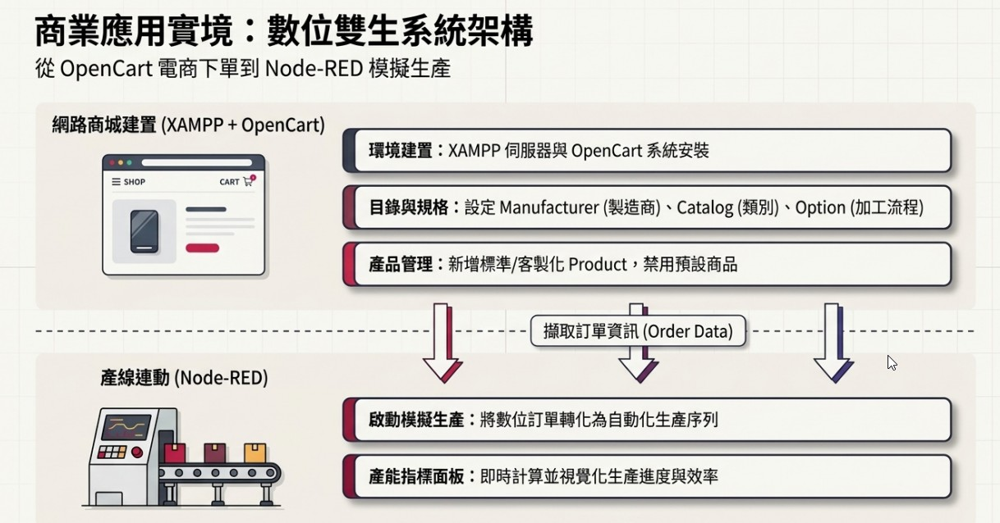
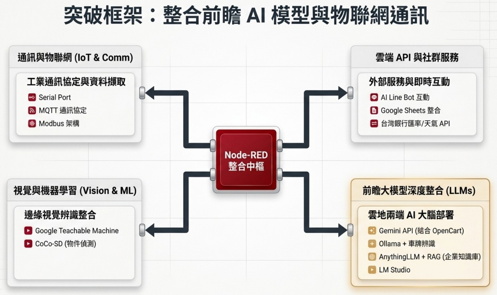
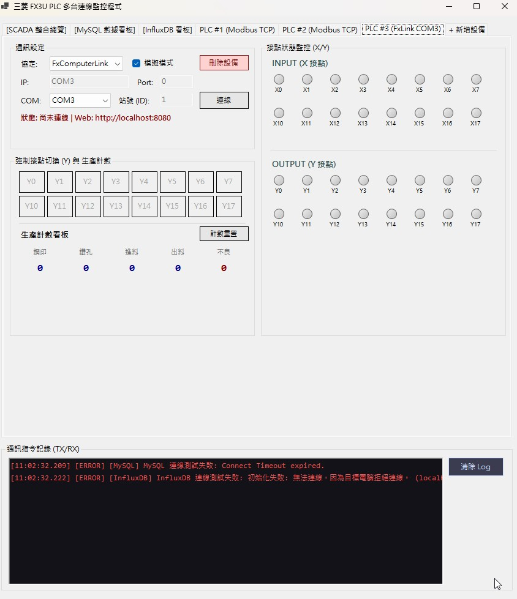
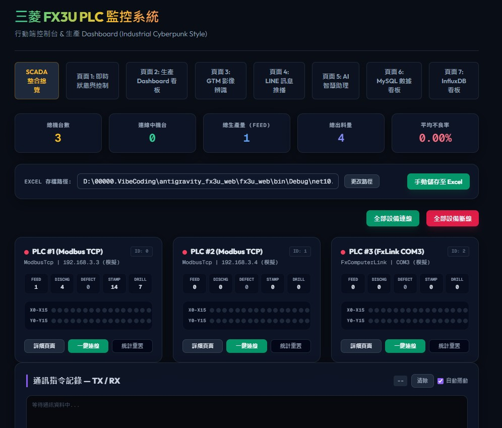

結合傳統工控、生成式 AI (Generative AI) 與 Vibe Coding 開發新浪潮，引領學員從基礎配線走向工業物聯網中央 SCADA 監控的核心實務。
核心機制：透過 MySqlConnector / Dapper 直連 Port 3306，執行原生 SQL 查詢與 UPDATE。
適用場景：車間內網、極致反應速度要求之上位機戰情室。
核心機制：OpenCart 後台配置 IP 白名單與 API Key，C# 經由 api/login 取得 Session Token 呼叫。
適用場景：免裝外掛、需走標準 HTTP/HTTPS 跨公網安全部署。
核心機制：安裝 REST Admin API 擴充套件，OAuth2 Bearer Token 授權，標準 GET/PUT JSON 操作。
適用場景：現代微服務架構、管理端強大控制權限、Swagger 契約對接。
以下為大綱簡報 PDF 每一頁高解析度導出畫面。點擊上方分頁切換簡報，並點擊「下一頁」即可預覽內容。
打穩機電整合與 PLC 配線基礎，認識暫存器映射與串列通訊 (RS232/Serial Port) 協議，理解底層硬體運作邏輯。
運用 ChatGPT (Node-RED Expert)、Gemini (Canvas/AI Studio) 進行代碼編寫與故障排除，大幅加速從零到一的程式原型開發。
引入 Dev Copilot 與 Antigravity，將心力專注於系統架構與業務流程設計，體驗透過高階代理程式協作完成系統交付的全新工程範式。

Dashboard 儀表板
OpenCart 商城對接
IoT 工業物聯網
三菱 PLC 序列控制
行動端與多協議整合本例說明如何以 PC 端 Node-RED 做為 SCADA 監控主站，透過 RS232 串列通訊與現場的三菱 PLC 控制器進行資料雙向通訊與除錯。
SCADA 主站使用 Modbus/Serial 節點，每 500 毫秒輪詢 PLC 暫存器（如 D0 紀錄生產總數、D1 紀錄氣壓感測器數值）。
在 Dashboard 網頁上以圖形化顯示當前機器動態。若氣壓感測值過低，SCADA 的警報日誌 (Alarm Logger) 立刻跳出紅色閃爍警報，並通過 LINE Bot 推送故障訊息。
操作員在監控網頁上按下「啟動加工」按鈕，SCADA 發送 ASCII 指令強行寫入 PLC 的輔助繼電器（如 M0 = ON），驅動實體電磁閥與氣缸運作。
本例展示晶圓廠房設備聯網 (IoT) 架構下，如何以邊緣閘道器 (Edge Gateway) 收集現場數據並對接中央 SCADA 監控與歷史資料庫。
邊緣 Node-RED 透過 SECS/GEM 協議抓取晶圓傳送盒 (FOUP) 的機械狀態，利用 Function 節點將數據序列化為結構化 JSON 封包，並以 MQTT 協議發布。
中央廠務監控系統 (FMCS SCADA) 訂閱 MQTT 主題，將冷卻水流量、無塵室微粒子數及機台稼動率動態繪製在戰情大螢幕上。
SCADA 同步將海量高頻監測數據存入 InfluxDB 時序資料庫，並調用本地端 Ollama/Gemini API 定期運行預測性維護，判斷主泵浦的損壞風險。
本例說明在智慧家庭主機中，如何利用 Node-RED 對接聯網快遞箱，並透過第三方 API 與 Line Bot 實作包裹收發與門禁安全監控。
智慧快遞箱的磁簧門禁開關與重量壓力感測器，透過 Modbus TCP / MQTT 將即時訊號回傳給家庭 Node-RED SCADA 監控主機。
Node-RED 使用 HTTP Request 節點，定時呼叫郵局或黑貓的物流 API 進行狀態輪詢，比對成功後，將「包裹已投遞」事件寫入家用資料庫。
SCADA 在客廳的壁掛觸控螢幕上點亮快遞箱的指示燈（提醒有信），並透過 Line Bot 發送包含包裹重量與取件代碼的即時通知。
Suno 是一款突破性的生成式 AI 音樂創作工具，能讓任何人無需懂音樂理論，只需輸入文字提示詞，即可在數秒內生成包含高品質人聲與完整樂器編排的專屬音樂與歌曲。
Obsidian 是本地 Markdown 雙向連結筆記軟體。搭配官方 Chrome Clipper 網頁剪報套件，能一鍵將技術手冊與 AI 精華歸檔至本地，建立視覺化知識圖譜。
Notion AI 提供會議錄音與逐字稿自動總結。透過對話功能，還能直接以自然語言檢索筆記本、Google Drive 與 GitHub，建立專案第二大腦。
AI Exporter 是一款 Chrome 擴充套件，能橫跨 ChatGPT、Gemini 等各大 AI 平台，一鍵將重要對話以 Markdown 等格式直接同步至您的 Notion 筆記庫中。
Notion Web Clipper 是一款官方擴充套件，能將任何技術文件、AI 指南或程式範例一鍵擷取並整理，同步存入您的 Notion 資料庫中。
ChatGPT 的「探索 GPTs」功能允許學員搜尋並使用客製化的 Node-RED 專屬助手。這些助手針對節點配置與 JS 偵錯進行了微調，能提供更精準、即時的開發協作。
Google Gemini 的「Gems」功能讓學員自訂 AI 助理。本指南引導您建立一個「Node-RED 5W1H 導師」Gems，以結構化框架解答疑惑並直接回傳 Flow JSON。
Gemini Canvas 提供獨立的程式編輯與預覽區。本指南引導您利用 Canvas 功能，在數秒內生成高質感的台積電製程監控 HMI 原型網頁。
NotebookLM 是基於 Gemini Pro 的個人知識庫。本指南引導您上傳歷屆考古題或手冊，建立絕無幻覺的專屬 AI 導師，並生成語音與心智圖。
介紹如何在 Google Gemini 對話框中連結您在 NotebookLM 中建立的筆記本，進行無幻覺、有引用出處標記的考古題檢索實戰。
Manus 是一款通用型 AI Agent 平台。本指南引導您利用 Manus，將您的個人經歷與專題想法，全自動生成為一個高質感的專題計畫提案與網頁展示平台。
AI Studio 推出「+ New app」低程式碼開發功能。只需用語音或文字描述需求，Gemini 便會自動為您編寫並部署出功能完備的 Web 應用程式。
介紹如何將通用型 AI Agent 平台 Manus 與您的 Notion 知識庫進行無縫連結。利用模型上下文協定 (MCP) 讀寫您 Notion 筆記，實現自動化文件協作。
介紹如何管理與啟用 Manus 自訂技能 (Skills)。以機器學習互動網站生成為例，詳解如何透過行為約束規則指引 Agent 全自動產出高質感 HMI 與教學網頁。
手機 Google Drive 掃描家電手冊 PDF ➔ 匯入 NotebookLM 建立專屬知識庫 ➔ Gemini Canvas 全自動生成用電安全互動網頁。
上傳 Node-RED 流程截圖或文字描述 ➔ Gemini 視覺識別節點拓撲 ➔ 一鍵生成 SVG 視覺化圖與標準 JSON 程式碼。
監控 RPM (請求/分)、TPM (Token/分) 與 RPD (請求/日) 額度 ➔ 排查 HTTP 429 錯誤 ➔ 流量調步與自動重試。
授權本機資料夾 ➔ 讀取電路板照片 ➔ AI 視覺辨識主控 SoC、IC 與被動元件 ➔ 自動建立標準 Excel BOM 物料清單。
啟用 Agent 設定 ➔ 掃描 LINE QR Code ➔ 雙向驗證綁定 ➔ 隨時隨地在 LINE 聊天室下達任務與接收成果推播。
Google DeepMind 專屬自主代理開發平台 ➔ 多 Agent 並行編排 ➔ Remote Control 跨裝置遠端遙控 ➔ 打造智慧工控中樞。
自然語言生成投票 Web App ➔ QR Code 掃碼即投 ➔ 3秒動態長條圖 ➔ 雲端受管資料庫與個資去識別化。